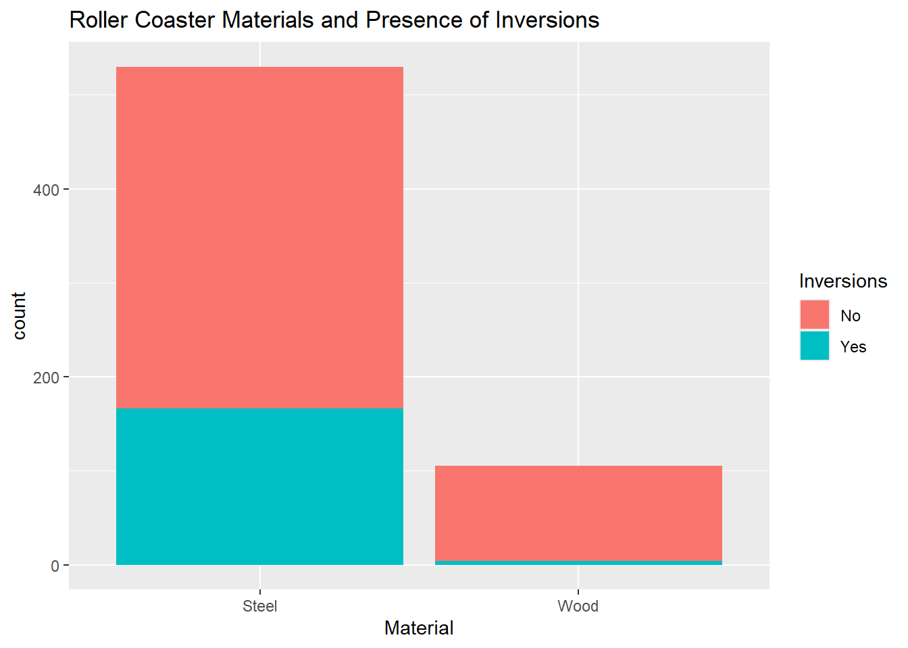
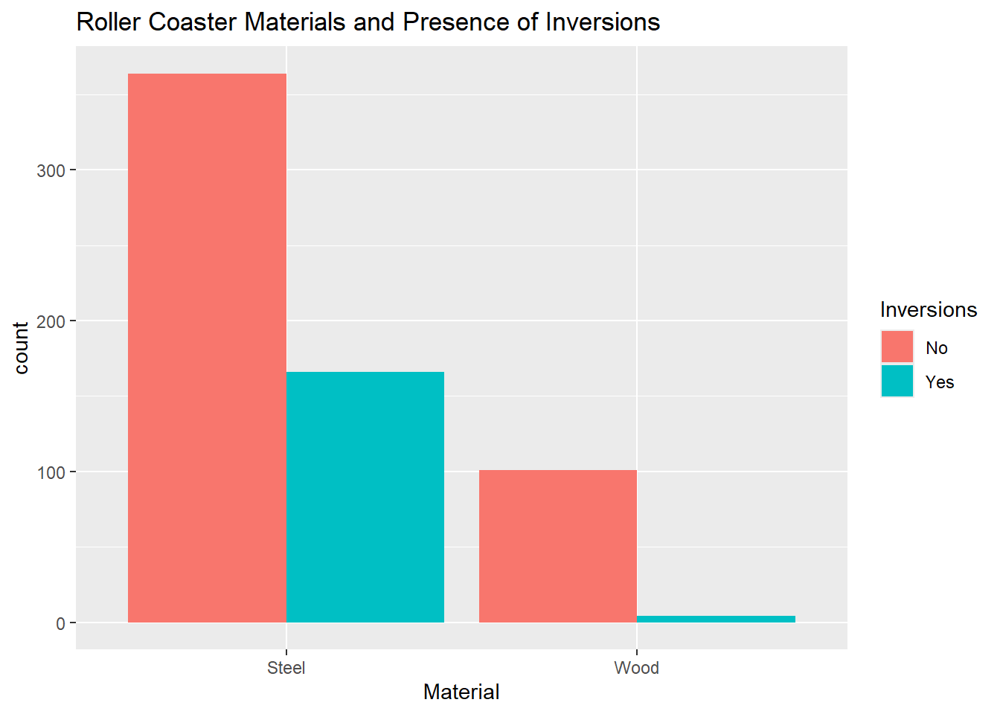

library(httr)
library(jsonlite)
library(tidyverse)
library(readr)
library(gt)ST558_HW5_Yefrid
Task 1: Querying an API and a Tidy-Style Function
1.
We need to use the GET() function from the topic trade
Now we obtain the info from the API.
info_news <- GET("https://newsapi.org/v2/everything?q=trade&from=2026-08-21&language=en&pageSize=50&apiKey=b83cc47afb8e4f47a5ff9dafee63d05c")We explore the info to determine the actual data that we need to extract.
str(info_news)List of 10
$ url : chr "https://newsapi.org/v2/everything?q=trade&from=2026-08-21&language=en&pageSize=50&apiKey=b83cc47afb8e4f47a5ff9dafee63d05c"
$ status_code: int 426
$ headers :List of 12
..$ date : chr "Wed, 23 Sep 2026 18:50:29 GMT"
..$ content-type : chr "application/json; charset=utf-8"
..$ content-length : chr "255"
..$ cache-control : chr "no-cache"
..$ pragma : chr "no-cache"
..$ expires : chr "-1"
..$ x-cached-result: chr "false"
..$ cf-cache-status: chr "DYNAMIC"
..$ nel : chr "{\"report_to\":\"cf-nel\",\"success_fraction\":0.0,\"max_age\":604800}"
..$ report-to : chr "{\"group\":\"cf-nel\",\"max_age\":604800,\"endpoints\":[{\"url\":\"https://a.nel.cloudflare.com/report/v4?s=6vD"| __truncated__
..$ server : chr "cloudflare"
..$ cf-ray : chr "a3fbbc408b28990a-IAD"
..- attr(*, "class")= chr [1:2] "insensitive" "list"
$ all_headers:List of 1
..$ :List of 3
.. ..$ status : int 426
.. ..$ version: chr "HTTP/2"
.. ..$ headers:List of 12
.. .. ..$ date : chr "Wed, 23 Sep 2026 18:50:29 GMT"
.. .. ..$ content-type : chr "application/json; charset=utf-8"
.. .. ..$ content-length : chr "255"
.. .. ..$ cache-control : chr "no-cache"
.. .. ..$ pragma : chr "no-cache"
.. .. ..$ expires : chr "-1"
.. .. ..$ x-cached-result: chr "false"
.. .. ..$ cf-cache-status: chr "DYNAMIC"
.. .. ..$ nel : chr "{\"report_to\":\"cf-nel\",\"success_fraction\":0.0,\"max_age\":604800}"
.. .. ..$ report-to : chr "{\"group\":\"cf-nel\",\"max_age\":604800,\"endpoints\":[{\"url\":\"https://a.nel.cloudflare.com/report/v4?s=6vD"| __truncated__
.. .. ..$ server : chr "cloudflare"
.. .. ..$ cf-ray : chr "a3fbbc408b28990a-IAD"
.. .. ..- attr(*, "class")= chr [1:2] "insensitive" "list"
$ cookies :'data.frame': 0 obs. of 7 variables:
..$ domain : logi(0)
..$ flag : logi(0)
..$ path : logi(0)
..$ secure : logi(0)
..$ expiration: 'POSIXct' num(0)
..$ name : logi(0)
..$ value : logi(0)
$ content : raw [1:255] 7b 22 73 74 ...
$ date : POSIXct[1:1], format: "2026-09-23 18:50:29"
$ times : Named num [1:6] 0 0.0219 0.0351 0.0604 0.1018 ...
..- attr(*, "names")= chr [1:6] "redirect" "namelookup" "connect" "pretransfer" ...
$ request :List of 7
..$ method : chr "GET"
..$ url : chr "https://newsapi.org/v2/everything?q=trade&from=2026-08-21&language=en&pageSize=50&apiKey=b83cc47afb8e4f47a5ff9dafee63d05c"
..$ headers : Named chr "application/json, text/xml, application/xml, */*"
.. ..- attr(*, "names")= chr "Accept"
..$ fields : NULL
..$ options :List of 2
.. ..$ useragent: chr "libcurl/8.14.1 r-curl/7.0.0 httr/1.4.7"
.. ..$ httpget : logi TRUE
..$ auth_token: NULL
..$ output : list()
.. ..- attr(*, "class")= chr [1:2] "write_memory" "write_function"
..- attr(*, "class")= chr "request"
$ handle :Class 'curl_handle' <externalptr>
- attr(*, "class")= chr "response"2.
We see that the data is under the name content.
We use the jsonlite package to get a tibble.
parsed <- fromJSON(rawToChar(info_news$content))
team_info <- as_tibble(parsed$articles)
team_info# A tibble: 0 × 03.
Now we will create a funstion that will create the URL to get data from the News API.
get_news <- function(title, period, key){
url <- paste(paste0("https://newsapi.org/v2/everything?q=", title),
paste0("from=", as.character(period)),
paste0("apiKey=", key),
sep = "&"
)
info_news <- GET(url = url)
parsed <- fromJSON(rawToChar(info_news$content))
team_info <- as_tibble(parsed$articles)
team_info
}Now we can test the function with two different topics and dates
get_news("macklemore", "2026-09-15", "b83cc47afb8e4f47a5ff9dafee63d05c")# A tibble: 99 × 8
source$id $name author title description url urlToImage publishedAt content
<chr> <chr> <chr> <chr> <chr> <chr> <chr> <chr> <chr>
1 bbc-news BBC … <NA> Ed S… "US stadiu… http… https://i… 2026-09-17… "Rober…
2 bbc-news BBC … <NA> Watc… "Sheeran's… http… https://i… 2026-09-16… "Ed Sh…
3 business… Busi… kvlam… Mack… "Macklemor… http… https://i… 2026-09-15… "Mackl…
4 business… Busi… Gabbi… Mack… "Ed Sheera… http… https://i… 2026-09-16… "Ed Sh…
5 <NA> NPR The A… Ed S… "Ed Sheera… http… https://n… 2026-09-16… "NEW Y…
6 <NA> NPR Holly… True… "The world… http… https://n… 2026-09-18… "From …
7 <NA> NPR The A… Ed S… "Ed Sheera… http… https://n… 2026-09-20… "PHILA…
8 <NA> Yaho… Dylan… Ed S… "The fate … http… https://s… 2026-09-16… "The f…
9 <NA> Yaho… Dylan… Ever… "Ed Sheera… http… https://s… 2026-09-19… "Ed Sh…
10 <NA> Abcn… Jack … Ed S… "Opening a… http… https://i… 2026-09-20… "Ed Sh…
# ℹ 89 more rowsget_news("gas", "2026-09-10", "b83cc47afb8e4f47a5ff9dafee63d05c")# A tibble: 98 × 8
source$id $name author title description url urlToImage publishedAt content
<chr> <chr> <chr> <chr> <chr> <chr> <chr> <chr> <chr>
1 <NA> Gizm… Ellyn… Over… A new stud… http… https://g… 2026-09-10… "As hu…
2 <NA> Gizm… Tom M… EPA … Donald Tru… http… https://g… 2026-09-15… "The E…
3 the-verge The … Justi… Trum… The Enviro… http… https://p… 2026-09-14… "<ul><…
4 the-verge The … Andre… GM c… Last week,… http… https://p… 2026-09-21… "<ul><…
5 bbc-news BBC … https… Trum… The bill i… http… https://i… 2026-09-18… "US Pr…
6 <NA> Kota… Ethan… Wolv… Logan's ab… http… https://k… 2026-09-19… "Even …
7 <NA> Slas… BeauHD Scie… An anonymo… http… https://a… 2026-09-15… "NASA'…
8 <NA> Yaho… MATTH… Trum… The Enviro… http… https://s… 2026-09-14… "WASHI…
9 <NA> Yaho… <NA> US G… <NA> http… <NA> 2026-09-14… "If yo…
10 <NA> Kota… Ethan… Marv… The PS5 bl… http… https://k… 2026-09-11… "If yo…
# ℹ 88 more rowsTask 2: Summarizing Roller Coaster Data
First we are going to read the data from the roller coaster, and convert the required variables to factor.
rc_data <- read_csv("635USrollercoasters.csv") |>
mutate(State = as.factor(State),
`Census Region` = as.factor(`Census Region`),
AgeGroup = as.factor(AgeGroup),
Scale = as.factor(Scale),
Type = as.factor(Type),
Design = as.factor(Design),
`Inversions?` = as.factor(`Inversions?`),
Latitude = NULL,
Longitude = NULL,
Boundary = NULL)Rows: 635 Columns: 21
── Column specification ────────────────────────────────────────────────────────
Delimiter: ","
chr (12): Coaster, Park, City, State, Census Region, AgeGroup, Scale, Type, ...
dbl (9): Year Opened, TopSpeed, MaxHeight, Drop, Length, Duration, # of Inv...
ℹ Use `spec()` to retrieve the full column specification for this data.
ℹ Specify the column types or set `show_col_types = FALSE` to quiet this message.rc_data# A tibble: 635 × 18
Coaster Park City State `Census Region` `Year Opened` AgeGroup TopSpeed
<chr> <chr> <chr> <fct> <fct> <dbl> <fct> <dbl>
1 Adrenaline… Oaks… Port… Oreg… West 2018 3:Newest 45
2 Adventure … King… Mason Ohio Midwest 1991 2:Recent 35
3 Afterburn Caro… Char… Nort… South 1999 2:Recent 62
4 Aftershock Silv… Athol Idaho West 2008 3:Newest 65.6
5 Air Grover Busc… Tampa Flor… South 2010 3:Newest 22
6 Alpengeist Busc… Will… Virg… South 1997 2:Recent 67
7 Alpine Bob… Grea… Quee… New … Northeast 1998 2:Recent 35
8 American E… Six … Gurn… Illi… Midwest 1981 2:Recent 66
9 American T… Six … Eure… Miss… Midwest 2008 3:Newest 48
10 Anaconda King… Dosw… Virg… South 1991 2:Recent 50
# ℹ 625 more rows
# ℹ 10 more variables: MaxHeight <dbl>, Scale <fct>, Type <fct>, Design <fct>,
# Drop <dbl>, Length <dbl>, Duration <dbl>, `Inversions?` <fct>,
# `# of Inversions` <dbl>, Make <chr>4.
First we need to determine how the data is stored, for that we are going to use str() function
str(rc_data)tibble [635 × 18] (S3: tbl_df/tbl/data.frame)
$ Coaster : chr [1:635] "Adrenaline Peak" "Adventure Express" "Afterburn" "Aftershock" ...
$ Park : chr [1:635] "Oaks Amusement Park" "Kings Island" "Carowinds" "Silverwood Theme Park" ...
$ City : chr [1:635] "Portland" "Mason" "Charlotte" "Athol" ...
$ State : Factor w/ 40 levels "Alabama","Arizona",..: 30 28 27 9 7 37 26 10 21 37 ...
$ Census Region : Factor w/ 4 levels "Midwest","Northeast",..: 4 1 3 4 3 3 2 1 1 3 ...
$ Year Opened : num [1:635] 2018 1991 1999 2008 2010 ...
$ AgeGroup : Factor w/ 3 levels "1:Older","2:Recent",..: 3 2 2 3 3 2 2 2 3 2 ...
$ TopSpeed : num [1:635] 45 35 62 65.6 22 67 35 66 48 50 ...
$ MaxHeight : num [1:635] 72 63 113 192 25 ...
$ Scale : Factor w/ 4 levels "Extreme","Family",..: 1 4 1 1 2 1 4 1 4 1 ...
$ Type : Factor w/ 2 levels "Steel","Wood": 1 1 1 1 1 1 1 2 2 1 ...
$ Design : Factor w/ 7 levels "Bobsled","Flying",..: 4 4 3 3 4 3 1 4 4 4 ...
$ Drop : num [1:635] 70 47 110 177 22.5 170 20 147 80 144 ...
$ Length : num [1:635] 1050 2963 2956 1204 628 ...
$ Duration : num [1:635] 66 140 167 92 47 190 100 143 110 110 ...
$ Inversions? : Factor w/ 2 levels "No","Yes": 2 1 2 2 1 2 1 1 1 2 ...
$ # of Inversions: num [1:635] 3 0 6 3 0 6 0 0 0 4 ...
$ Make : chr [1:635] "Gerstlauer Amusement Rides GmbH" "Arrow Dynamics" "Bolliger & Mabillard" "Vekoma" ...As previously transformed, the data that required to be factor were transformed, and the numeric variables are correctly stores as numeric variables
5.
And we determine the number of missing values for each of the variables
colSums(is.na(rc_data)) Coaster Park City State Census Region
0 0 0 0 0
Year Opened AgeGroup TopSpeed MaxHeight Scale
0 0 74 8 0
Type Design Drop Length Duration
0 0 128 33 66
Inversions? # of Inversions Make
0 0 36 We can observe that there are missing values for Drop, TopSpeed, Duration, and Length, listed in descending order of their missig value counts.
6.
- We need to create first a one-way contingency table using the
Typevariable.
table(rc_data$Type)
Steel Wood
530 105 Base on the census data, there are 530 roller coasters made of steel.
- Now a two-way contingency table.
table(rc_data$Type, rc_data$Scale)
Extreme Family Kiddie Thrill
Steel 216 163 27 124
Wood 53 15 1 36Out of the 530 steel roller coasters, 216 are categorized as extreme.
- Now a three-way contingency table
table(rc_data$Type, rc_data$Scale, rc_data$AgeGroup), , = 1:Older
Extreme Family Kiddie Thrill
Steel 8 6 4 18
Wood 9 7 1 16
, , = 2:Recent
Extreme Family Kiddie Thrill
Steel 82 37 9 27
Wood 23 3 0 9
, , = 3:Newest
Extreme Family Kiddie Thrill
Steel 126 120 14 79
Wood 21 5 0 11From the older roller coasters, 9 are made of wood and categorized as extreme.
7.
First a conditional two-way contingency table, using a subset of the data, and then creating the two-way table
sub_rc <- filter(rc_data, `Census Region` == "South")
table(sub_rc$Type, sub_rc$Scale)
Extreme Family Kiddie Thrill
Steel 79 65 6 46
Wood 13 3 0 11And then, creating first a three way contingency table, and sub setting it.
table(rc_data$Type, rc_data$Scale, rc_data$`Census Region`)[ , , "South"]
Extreme Family Kiddie Thrill
Steel 79 65 6 46
Wood 13 3 0 118.
In this step we need to create a two-way contingency table using tidyverse.
rc_data |>
group_by(`Inversions?`, Type) |>
summarise(count = n(), .groups = "drop") |>
pivot_wider(names_from = `Inversions?`, values_from = count) # A tibble: 2 × 3
Type No Yes
<fct> <int> <int>
1 Steel 364 166
2 Wood 101 49.
Now we need to create a stacked bar plot.
ggplot(data = rc_data |>
group_by(`Inversions?`, Type) |>
summarise(count = n()),
aes(x = Type,
y = count,
fill = `Inversions?`)) +
geom_bar(stat = "identity") +
labs(title = "Roller Coaster Materials and Presence of Inversions",
x = "Material") +
scale_fill_discrete("Inversions")`summarise()` has grouped output by 'Inversions?'. You can override using the
`.groups` argument.
And side by side bar
ggplot(data = rc_data,
aes(x = Type,
fill = `Inversions?`)) +
geom_bar(position = "dodge") +
labs(title = "Roller Coaster Materials and Presence of Inversions",
x = "Material") +
scale_fill_discrete("Inversions")